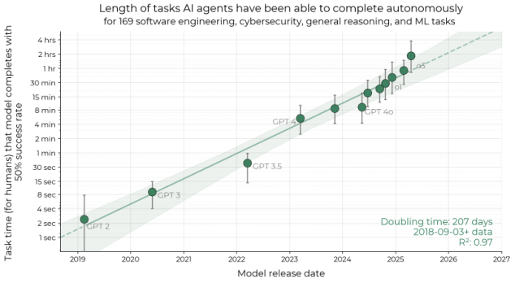

Both sides of the AI takeoff argument lean on the same measured trend
METR measured AI's reach on coding tasks doubling every seven months for six years, and the same line is the continuity camp's proof of a smooth climb and the fast camp's runway to a self-improving machine.
Why this matters
When people argue about how dangerous advanced AI could be, a hidden number is usually doing the work underneath: how fast the last stretch of progress arrives. Does the decisive capability arrive as a sudden jump to something far beyond us, or does it climb a curve you could have plotted in advance? This takeoff-speed question sits under almost every AI timeline you read. Whether governments get years to react or weeks, whether one lab pulls decisively ahead or capability stays spread across many hands, turns on it. By the end you will know the two shapes progress could take, why serious people expect each, the trend both sides point to, and why it has not settled the argument. A jump, or a curve?
- 01
- The intelligence explosion: the self-improvement loop this speed question takes as given.
- 02
- Scaling laws: the smooth capability curve the continuity case rests on.
A jump, or a curve
Everyone agrees AI keeps getting more capable. The fight is about the shape of the final stretch. The clearest statement is Paul Christiano's, whose 2018 essay set the terms most people still use. He defines a slow takeoff as one where "there will be a complete 4 year interval in which world output doubles, before the first 1 year interval in which world output doubles."1
A slow takeoff still ends somewhere staggering, a world economy doubling in a single year. It just passes through a four-year doubling first, so the speed-up is visible on the way up. A fast takeoff skips that warning and lands before anyone has watched it build.1
The disagreement is not about the size of the end state. Both camps expect enormous change. It is about whether you would see it coming. Nick Bostrom put clock times on it: a fast takeoff runs over minutes to days, a slow one over decades.2
The strongest case for a jump
The fast case began as one sentence of deduction. I. J. Good wrote in 1965 that a machine able to out-design humans could design a better machine than itself, and so on, and that "there would then unquestionably be an 'intelligence explosion.'"3 That is a claim about a mechanism, recursive self-improvement, which has its own lesson. The takeoff question is the one Good's sentence skips. Grant the loop. Does it turn slowly, or does it snap?
Eliezer Yudkowsky's answer is that a loop like this has no reason to turn slowly. When a process improves at a rate that itself grows with how improved the process already is, it does not naturally settle into a steady line. It tends toward a stall or a blow-up. A smooth middle would need an oddly precise law of diminishing returns to hold it there. His precedent is human evolution. Natural selection improved our ancestors at a crawling, constant rate, then general intelligence crossed some threshold and the result, us, vastly outran the process that produced it.4
In a 2021 exchange with Christiano, Yudkowsky put it in concrete cases. The real precedent, he argued, is a series of jumps: humans over chimpanzees, the first fission weapon, AlphaGo climbing from amateur to superhuman in days. And he rejected world output as the thing to watch, because the capability that ends the game could exist before it shows up in any economic number.5
The case has a current, dated form. AI 2027, a scenario by Daniel Kokotajlo, Eli Lifland, and three colleagues, states the fast view as a calendar. These are not cranks. Kokotajlo's 2021 scenario described chain-of-thought prompting, inference-time scaling, and chip export controls before ChatGPT existed, and Lifland has ranked first on a public forecasting leaderboard. Their scenario runs the self-improvement loop through automated AI research. It reaches a superhuman coder around early 2027, a superhuman AI researcher months later, and superintelligence by late 2027. The research speed-up climbs from one-and-a-half times to three, then ten, then twenty-five, until near the peak a year of progress passes in a week.6 Those multipliers describe a system nobody has built, and the authors say so. They call it a prediction, not a demand, and put a band of roughly five times slower or faster around the dates. Held at full strength, the fast case is serious, specific, and honestly hedged.
The part you can already plot
The continuity camp is not answering with faith. It is answering with a fit. Robin Hanson explains why no single project leaps ahead of the world. Intelligence, he says, is being good at many separate mental tasks, and gains come from getting the detail right across all of them. A project that cannot innovate faster than everyone else combined cannot suddenly outgrow them.7
Underneath that argument is a measured regularity. Kaplan and colleagues reported in 2020 that "the loss scales as a power-law with model size, dataset size, and the amount of compute used for training, with some trends spanning more than seven orders of magnitude."8 In plain terms, how wrong a language model is falls along a straight, predictable line as you add compute and data. That finding, and its limits, are their own lesson; here it matters only that the curve was regular enough to plan around, and to catch a field-wide mistake. The Chinchilla result in 2022 found that the biggest models were badly undertrained, because "for every doubling of model size the number of training tokens should also be doubled."9 A 70-billion-parameter model trained by that rule beat models several times its size. Capability had been tracking a known quantitative rule, not a lucky architectural leap.
METR, an evaluations group, timed how long a task takes a skilled human, then asked how long a task an AI model can finish. Their metric is the "50%-task-completion time horizon, the time humans typically take to complete tasks that AI models can complete with 50% success rate."10 Measured across twelve frontier models from 2019 to 2025, that horizon "has doubled every 207 days," about seven months, with a confidence interval of 166 to 240 days.10 The span is enormous: "GPT-2 has a 50% time horizon of only 2 seconds, while o3 has a 110-minute time horizon and succeeds at several tasks over 4 hours."10

Here the split between shown and projected becomes concrete. The straight line is real, measured on systems you can run today. The jump is not measured on anything, because the system it describes, a researcher that rewrites itself, does not yet exist. Evolution and AlphaGo are real jumps, but they are analogies. Natural selection is not gradient descent, and a program that mastered a closed board game is a bet, not a demonstration, about open-ended research. And the measured line is narrower than it looks. METR reports much lower performance on messy, less structured tasks than on the clean problems it scored. The tidy exponential describes a specific kind of work, not the whole of it.10
The same line, claimed by both
Here is what the figure hides. That measured line is not only the continuity camp's evidence. It is the fast camp's too. Read straight, it is a smooth six-year exponential, exactly Christiano's curve. Extended forward at the same doubling rate, it reaches AI that runs month-long projects on its own within about a decade, the runway AI 2027 builds its scenario on.6 One measurement, two readings.
METR itself will not resolve the split. It notes that the recent points may be bending upward. Growth from 2023 to 2025 ran about 20% faster than the earlier rate, and o3 sits above the long-run line by a margin unlikely to be chance. But METR rates its confidence in the acceleration low: only seven frontier models fall in that window.10 So even the possible early sign of a jump is, by the measurers' own account, not yet a jump. The one number everyone can see is fuel for both cases and a verdict for neither.
It is tempting to file the smooth reading under reassuring. Its own author refuses that. In the same essay that defines a slow takeoff, Christiano argues it may be the harder case to survive, not the easier one. A slow takeoff means many capable systems arrive close together. Any aligned system then has to compete with unaligned ones already loose in the world, rather than one careful project reaching the frontier first and alone.1 Continuity buys warning time and spends it on a harder coordination problem. Whether safety keeps pace with capability along that curve is a separate worry; the point here is only that continuous does not mean gentle.
What each camp is really asking
Brought to the present, the two sides ask for different things. The fast case, in its AI 2027 form, is a forecast, not a policy platform. Its authors say their goal is predictive accuracy. They write two endings, a race to the bottom and a coordinated slowdown, without saying which to want, and ask that people take a specific near-term timeline seriously enough to prepare.6 The continuity side asks for discipline. Christiano's challenge is not that a jump cannot happen. It is that anyone predicting one should say in advance what they expect to see, so the claim can be checked rather than asserted after the fact.5
The deepest disagreement is not about the data. It is about what would count as data at all.
| Question | Fast takeoff (Yudkowsky) | Continuous takeoff (Christiano) |
|---|---|---|
| What is the precedent? | Capability crosses thresholds and jumps: chimps, fission, AlphaGo. | Capability is a smooth power-law in compute and data. |
| What do you measure? | Capability directly; it can exist before output moves. | World output; and demand a prediction made in advance. |
| What would settle it? | A decisive jump that no forecast saw coming. | The curve keeps fitting, or a foretold jump actually lands. |
That is why the same straight line can sit at the center of the argument and end it for no one. Two people who disagree about which measurement counts cannot be settled by a third. Alarm and dismissal sit at the same distance from the data: the extrapolation to superintelligence by 2027 is a projection past it, and so is the confidence that the curve stays smooth. Both are reading the same six-year line and betting on what happens after it leaves the frame.
The takeaway
The takeoff question is about the shape of the last stretch, a jump or a curve, not whether AI keeps improving. The one thing measured on systems that exist is METR's time-horizon trend, a straight six-year line. It is the strongest evidence both camps have: the continuity side reads it flat, the fast side extends it off the chart. The line between shown and projected is concrete. Scaling curves and the METR trend were measured on real models. A researcher that rewrites itself, the twenty-five-times speed-up, and evolution and AlphaGo as proof of a jump are analogy, or a system not yet built. Do not mistake the smooth reading for the safe one: its own best defender thinks a slow takeoff might be the harder one to survive. So, jump or curve? The line we can see is a curve. Whether it hides a cliff past the edge of the chart is what no one has measured, because the machine that would climb it does not exist yet.
- 01
- Christiano, "Takeoff speeds": the continuous case argued in full, including why slow may be more dangerous.
- 02
- AI 2027: the fast scenario, dated and staged month by month.
Sources
- Paul Christiano · Takeoff speeds (2018)
- LessWrong · Superintelligence reading group, Ch. 4: Intelligence Explosion Kinetics (reports Bostrom's takeoff taxonomy)
- I. J. Good · Speculations Concerning the First Ultraintelligent Machine (Advances in Computers, vol. 6, 1965)
- Eliezer Yudkowsky · Hard Takeoff (2008)
- MIRI · Yudkowsky and Christiano discuss "Takeoff Speeds" (2021)
- Kokotajlo, Lifland, Larsen, Dean & Alexander · AI 2027
- Robin Hanson · I Still Don't Get Foom (2014)
- Kaplan et al. · Scaling Laws for Neural Language Models (2020)
- Hoffmann et al. · Training Compute-Optimal Large Language Models (Chinchilla, 2022)
- Kwa, West et al. (METR) · Measuring AI Ability to Complete Long Software Tasks (2025)